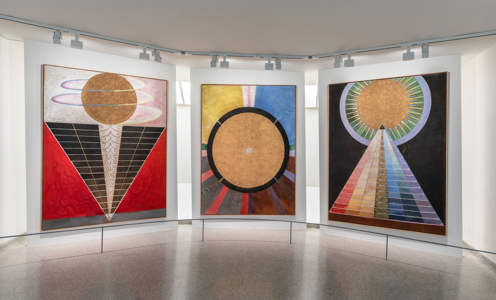

Group X, Altarpieces, Nos. 1-3, 1915
- 1915: af Klint completes her final paintings in the series
- Representative of Theosophy’s evolutionary theory: evolution occurs in 2 ways,
ascending from physical to spiritual and descending from the divine to the material world
- Use of metallic leaf signifies importance
- Meant to be displayed in a sanctuary or the center point of imagined circular temple